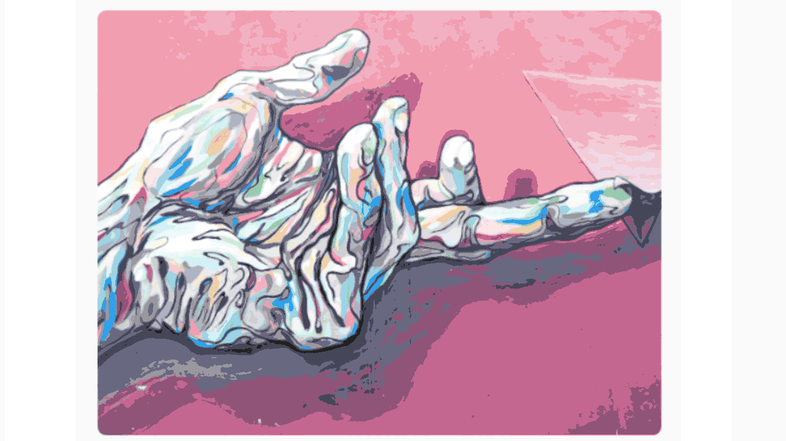
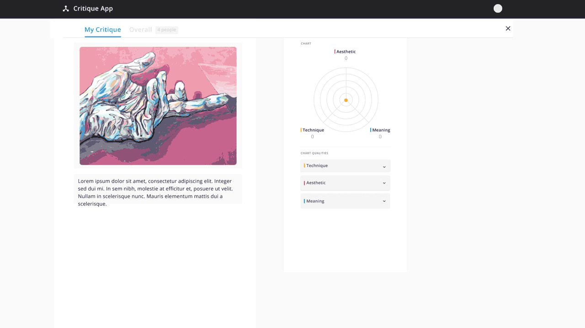
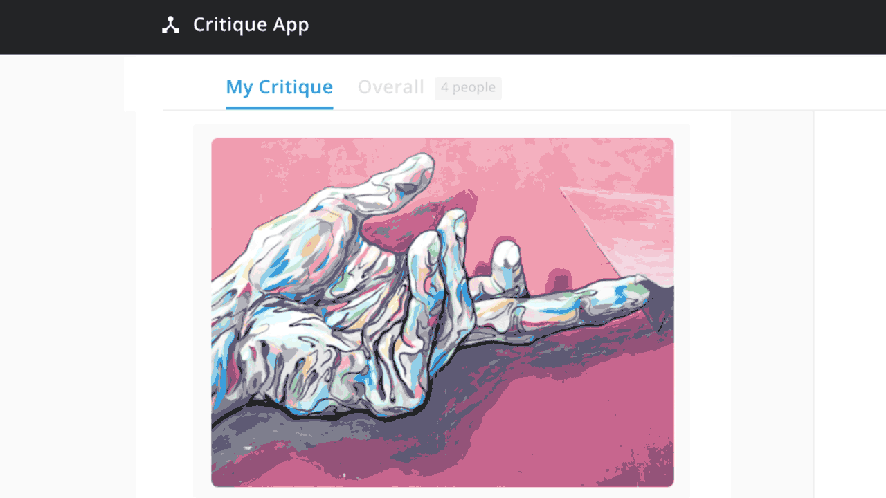

Critique App
During my time as a university research assistant, I was tasked with creating high-fidelity animated mockups for a web application designed to facilitate student design critiques. These mockups served as the primary communication tool for pitching the platform to various departments within the design college.
UX Design / Animation
Problem
The challenge was twofold. First, the existing design critique process in many classrooms was fragmented and lacked a structured way for students to provide—and receive—truly nuanced, tangible feedback. Second, while the development team had a solid design system in Figma, static prototypes weren't enough to "sell" the vision to faculty. We needed to prove that this tool wasn't just a digital form, but a dynamic, user-friendly ecosystem that could handle complex data like cumulative assessments and real-time discussion.
Design Intent & Insight
My intent was to bridge the gap between concept and reality through motion. By bringing Figma assets into After Effects, I focused on animating the specific user flows that defined the platform’s utility—such as the transition from individual category scoring to the final, consolidated cumulative evaluation. Every animation was designed to highlight the rhythm of a critique, ensuring that stakeholders could see exactly how the UI would support a fluid, high-energy classroom environment.

My role was to serve as a bridge between my teammates' static vision and a functional reality. Taking the prototypes they had built and translating them into motion taught me that animation is a powerful tool for simplification. I discovered that by carefully timing transitions and guiding the viewer’s eye, I could distill complex, data-heavy user flows into intuitive, bite-sized sequences. Incorporating motion doesn't just add flair; it acts as a narrator that explains the "how" and "why" of a design, making the logic of the design accessible even to those outside the primary audience.
Outcomes

The sequencing of screens followed the flow that users would take to complete their evaluation of classmates' creations. Critiques consist of several defined overrarching categories, with multifacted feedback options including numerical score, strengths/weaknesses, and text areas for descriptive comments. Said categories, as well as strengths/weaknesses, are established at the beginning of each course's feedback session.
The goal is for each student to give and receive greater, more nuanced feedback and tangible takeaways in order to grow as a designer and critic.

At the end, each individual critique in the group is consolidated into a cumulative evaluation, with the average score and assigned strengths/weaknesses tallied under their respective categories. The discussion panel consolidates any provided comments, as well as further discourse that may occur after individual evaluations are submitted.
